Kunmadaras emblematikus helye a zsidó pogromoknak, a főtéren emléktábla is őrzi az áldozatok emlékét. A falu határában, a piacnak és bográcsozásnak kialakított terület szélén egy üres kis házban helyeztem el nyers agyag tárgyakat. A helyszínen készített formákat úgy alakítottam, hogy azok használati és szakrális tárgyak sziluettjét idézzék, és részben a lejegyzett eseményekre vonatkozzanak (pl. a piacon történt esetből, ahol egy zsidó kofának összetörték a tojásait). A tárgyak mint egy emberélet, egy kultúra szimbólumai jelennek meg, az őrizetlenségük pedig a tulajdonlás-eltulajdonítás-megőrzés-megmentés gesztusai közötti éles vagy elmosódott határt jelzi. A mű az eseményekhez kapcsolódó szenvtelenségnek és bűntudatnak állít emléket.
/ Kunmadaras is an emblematic scene of Jewish pogroms, with a memorial plaquette honoring the victims’ memory on the main square. In a small, empty house on the outskirts of the village, near the market area also used for open-air cooking, I’ve placed and left the raw clay figures. I made them on site, with their silhouettes resembling religious and everyday objects and simple tools, related in some measure to events recorded here (e.g. the case at the market, when one of the merchant’s eggs were crushed). The objects, symbols of a life as well as a culture, are unguarded, illustrating the either clear or blurry boundary between gestures of possessing, appropriating, preserving, and saving. The work commemorates the detachment and the guilt associated with the events that took place here.
A mauthauseni magyar emlékmű a Kádár-korszak első, holokauszt-emlékezethez kapcsolódó, állami finanszírozású képzőművészeti projektje. A hatvanas években még két hasonló vállalkozásra került sor: közös jellemzőjük, hogy külföldön (Mauthausen, 1964; Auschwitz, 1965), vagy legalábbis külföldi célközönség számára hozták létre azokat (A magyar képzőművészek a fasizmus ellen, Magyar Nemzeti Galéria – a Fédération Internationale des Résistants kongresszusának alkalmából). Mindhárom projekt képzőművészeti eszközökkel volt hivatott bemutatni a „fasizmus elleni harcot”, valamint annak múltbeli és jelenkori hőseit: az országot irányító kommunistákat.
A Comité International de Mauthausen felkérése nyomán már 1955-ben döntés született „a fasizmus áldozatainak emlékére” egy emlékmű felállítására, a két méter magas emlékoszlop azonban csak terv maradt. 1957-ben a frissen megalakult (a Magyar Partizán Szövetségbe betagozódó) Nácizmus Üldözötteinek Bizottsága vette kezébe az ügyet. Gyűjtést indítottak, majd 1958-ban egy hat és fél méter magas bronz szobor (ma lappangó) makettjének elkészítését Farkas Aladárra bízták.
1959-ben a Képzőművészeti Alap meghívásos pályázatot írt ki hat szobrász részére. A zsűri a Magyarországon élő görög emigráns, Makrisz Agamemnon tervét választotta, Kiss István, Martsa István, Somogyi József és Laborcz Ferenc munkáival szemben (utóbbi két tervet is készített, míg Kerényi Jenő nem vett részt a pályázaton). A folyamatosan emelkedő költségek, valamint bürokratikus és diplomáciai akadályok miatt a felállítás időpontja egyre tolódott, az emlékművet végül 1964-ben avatták fel.
Véri Dániel
/
The Hungarian Memorial in Mauthausen had been the first state-funded fine arts project related to the memory of the Holocaust in Communist Hungary. Two more such endeavours took place in the 1960s: they share the common characteristic of being produced abroad (Mauthausen, 1964; Auschwitz, 1965) or at least for a foreign audience (The Hungarian Artists Against Fascism, Hungarian National Gallery, 1965 – on the occasion of the congress of the Fédération Internationale des Résistants). All three projects intended to showcase through artistic expression the “fight against Fascism” and its heroes in past and present times, namely the country’s Communist leadership.
Upon the request of the Comité International de Mauthausen it was decided as early as in 1955 to erect a monument “for the memory of the victims of Fascism”, but the two meters large memorial column remained only a plan. In 1957 the newly founded Committee of the Persecutees of Nazism (integrated into the Hungarian Partisan Association) took the initiative. They started a fundraising campaign and in 1958 commissioned Aladár Farkas to create a (currently missing) model for a six and a half meters large bronze sculpture.
In 1959, a by invitation only contest was announced by the Fine Arts Fund for six sculptors. The jury selected the plan created by Agamemnon Makrisz, a Greek émigré sculptor living in Hungary, forgoing works by István Kiss, István Martsa, József Somogyi and Ferenc Laborcz (the latter created two plans, whereas Jenő Kerényi did not take part in the contest). Due to the continuously increasing costs, as well as bureaucratic and diplomatic obstacles the date of the erection of the monuments had been repeatedly delayed; finally, the monument was inaugurated in 1964.
Barna Orsolya – Pálinkás Bence György: Lassabb hajnalt! digitális nyomat vaslemezen, 2014-2021
Barna Orsolya – Pálinkás Bence György: Lassabb hajnalt! digitális nyomat vaslemezen, 2014-2021
Pálinkás Bence: Lassabb Hajnalt: videó, 10 perc / video, 10 min
Pálinkás Bence György a Péterfy Sándor utca 42. alatt található ingatlan történetén keresztül mutatja be a rendszerváltás utáni évek hungarista és szkinhed mozgalmait. A csoportosulások térnyerését az is segítette, hogy a rendszerváltás után nem alakult ki egyértelmű jogi gyakorlat a gyűlöletbeszéd szankcionálására, így az újonnan megszerzett politikai- és szólásszabadság védelmét élvezve tudtak bázist építeni maguknak. Pálinkás korabeli dokumentumokat is beemelő videójában az ingatlan pincéjében való bolyongás a szélsőjobboldal által az 1940-es évektől napjainkig való útját és térnyerését szimbolizálja. A projekt címe a szélsőjobboldali szervezetek által gyakran használt jövőre vonatkozó, gyors társadalmi változást sürgető állításokra reagál. A Lassabb hajnalt! egy nyilas jelmondatnak mond ellent.
/ Bence György Pálinkás uses the history of the building at 42 Péterfy Sándor Street to present the Hungarist and skinhead movements which grew stronger in the wake of the regime change. These kinds of groups were able to gain ground in part simply because, following the fall of the socialist regime, there was no clear legal framework for sanctions against hate speech. Thus, the leaders of these groups were able to build a base for themselves under the protection of their newly acquired political rights, including the freedom of speech. In Pálinkás’ video, which includes documents from the period, we journey through the basement of the property and explore the rise of the far right from the 1940s to the present day. The title of the project is a response to the slogans often used by far-right organizations, who call for rapid social change. “A Slower Dawn!” is a rejection of an old Arrow Cross mantra
„A pozsonyi Zsidó Közösségi Múzeumban, a kiállított tárgyak közt szerepel egy gyerekméretű katicamintás pulóver. A tárgy, a maga kontrasztos motívumával azonnal felkeltette a figyelmemet. A kiállított tárgy mellett ez a szöveg olvasható: “Azoknak a zsidóknak, akiknek sikerült megszökniük a deportálások elől és 1944 őszén Szlovákiában maradtak, bujkálniuk kellett. Kisgyermekes családok az 1944-45-ös extrém telet erdőben, fűtetlen földalatti bunkerekben, kétségbeejtő higiéniai körülmények között, korlátozott élelmiszerellátás mellett töltötték. Pavel Traubner professzor, az ismert pozsonyi neurológus, a Szlovákiai Zsidó Hitközségek Központi Szövetségének tiszteletbeli elnöke volt az egyik ilyen gyermek. Évtizedek óta őrzi gyermekkori pulóverét emlékeztetőül a rejtőzködés reménytelen hónapjaira.” Saját művészeti praxisomban is sokszor foglalkozom régi tárgyakkal, sőt a magán életemben is gondosan elteszem a megörökölt dolgokat, emiatt könnyen tudok azonosulni a megőrzés gesztusával és a tárgyakon keresztül való emlékezéssel. Az eltelt évtizedek és a megváltozott társadalmi, történelmi kontextus miatt a tárgy, amely elvesztette eredeti funkcióját, új jelentésrétegekkel töltődik fel, és az emlékezet hordozójává válik.
Habár a rendszerváltás Szlovákiában Magyarországgal egy időben ment végbe, nem lehet figyelmen kívül hagyni azt az időben közeli és a rendszerváltás következményeként bekövetkezett radikális változást, amely 1993-ban Csehszlovákia szétválásához, vagyis az önálló Szlovák Köztársaság megalakulásához vezetett. Ez utóbbi esemény és az ezzel járó radikális nézetek hallatása a zsidó közösség tagjaiban érthető módon, a fasiszta Szlovák Állam (1939-1945) rémképét elevenítette fel. Szlovákiában a rendszerváltás időszakában a magyarországihoz képest lassabban alakultak ki a zsidó történelemmel foglalkozó intézmények.
Az, hogy ma a pulóver sorsa sok más történettel egyetemben megismerhető, egy hosszú folyamat eredménye. Munkám a rendszerváltást követő eseményekből emel ki néhányat, a pulóvert hordó és megőrző, a pulóver történetét feltáró és a pulóvert a Zsidó Közösségi Múzeumnak gyűjteményébe bevonó személyek megismertetésével. A pulóver replikájának létrehozásával, valamint a ruhadarab történetének egy új kontextusban, egy új közönség számára történő újramesélésével voltaképpen annak továbbírására teszek kísérletet.”
/ “Among the items on exhibit in the Jewish Community Museum in Bratislava is a child’s sweater with ladybug patterns. The object, with its dramatic motif, immediately caught my eye. Next to the sweater one finds the following text:
“Jews who managed to escape the deportations and remained in Slovakia in the autumn of 1944 were compelled to go into hiding. Families with young children spent the extreme winter of 1944–45 in the woods, in unheated underground bunkers, under dreadful hygienic conditions, and with only limited food supplies. Professor Pavel Traubner, a well-known neurologist from Bratislava and Honorary President of the Central Alliance of Jewish Communities in Slovakia, was one of these children. For decades, he has kept his childhood sweater as a reminder of the desperate months he spent in hiding.”
In my work as an artist, I often deal with old objects, and I myself also take care of things I have inherited, so I can easily identify with the gesture of preservation and memory through objects. As decades pass and the social and historical context changes, an object that has lost its original function acquires new layers of meaning and becomes a crucible of memory.
Although the fall of socialism in Slovakia happened at the same time as in Hungary, one cannot ignore the radical change that took place a few years later in no small part as a consequence of the regime change, which led to the breakup of Czechoslovakia in 1993 and the formation of the independent Slovak Republic. This latter event and the radical views it brought to the fore understandably evoked the horrifying image of the fascist Slovak State (1939–1945) among members of the Jewish community. During the period of regime change in Slovakia, institutions dealing with Jewish history emerged more slowly than in Hungary.
The fact that today we know the fate of the sweater and indeed the stories of many other objects is the result of a long process. My work calls attention to some of the events that followed the change of regimes, introducing the people who wore and preserved the sweater, who uncovered its history, and who made it part of the collection in the Jewish Community Museum. By creating a replica of the sweater and retelling the history of the garment in a new context for a new audience, I am in effect making an attempt to keep writing this story.”
A kipa, vagy kapedli a zsidó vallás egyik meghatározó öltözet-eleme, célja, hogy a vallásos zsidó férfiak fedett fővel jelenjenek meg Isten színe előtt. Jelentése kupola, mely utal arra, hogy Isten akarata ráborul az egyénre. Egyes zsidó férfiak még kalap alatt is hordanak kipát, hogy ha az illem, vagy kényelmi okok úgy kívánják, és kalapjukat le kell venniük, fejük akkor se maradjon fedetlen.
A második világháború után a deportált zsidó holokauszt-túlélők egy része visszatért hazájába. A magyarországi kommunista vezetés ideológiája, miszerint – vallási, nemi vagy faji alapú megkülönböztetés nélkül – mindenki azonos tagja lehet a társadalomnak, pozitív értéknek tűnt a zsidóság számára is, ezért sokan beléptek a pártba. Ezzel párhuzamosan a kommunista vezetés is igyekezett politikailag megbízható, képzett embereket a soraiba toborozni, s e szempontoknak a korábbi jobboldali ideológia ellensége, a zsidóság tagjai közül sokan megfeleltek. Mindeközben a kommunista párt vezetésébe is több zsidó származású ember került, s ez idővel komplex problémává vált. A kommunista karhatalom intézkedései ugyan egyszerre sújtották a zsidókat, a keresztényeket vagy az ateistákat, mégis sokan az MKP-ba belépő zsidók haragjának vélték ezeket, s az irigység, az egyenlőtlenség érzése indulatokba fordult át. Ismét megjelentek az antiszemita hangok szerte az országban, melynek társadalma egyrészt még nem heverte ki a háború okozta traumákat, másrészt sok tekintetben megragadt a Horthy-korszak közgondolkodásának mintázataiban.
Képzeljük magunkat egy holokausztot túlélő zsidó szerepébe, ahogy a borzalmak után, visszatérvén hazájába azt észleli, hogy újra a félelemmel igazgatott és agresszív társadalom ellensége lesz. Felvállalná vallásos hagyományait, ám a közhangulat ezt nem engedi. A rejtőzködés egyik ilyen módszere az áttérés, mellyel számos zsidó élt ezekben az években. Másrészt kiállhat vallása mellett, de ha szükséges, hagyományait nem, vagy rejtve, a szélesebb társadalom elől elzártan követi.
A „skipa” egy kitalált korabeli fejfedő, mely egy a sapkába gombolható kipa verziója. Viselője így hagyományai szerint hordhatja a kipát, ám a konfliktusokat kerülvén a társadalom színe előtt, ha kell, ezt elrejtheti.
A „kipacap” a skipának a mai divatban megfelelő alternatív fiktív verziója, mely egy fullcap baseball sapka és egy kipa találkozásából született meg. A kipacap felhívja a figyelmet arra, hogy a XXI. századi társadalmakban még mindig jelen van az antiszemitizmus, s általa a vallása vagy származása miatt hátrányosan megítélt emberek folytonos feszélyezettségének érzése.
/ The kippah is an essential Jewish religious clothing, required so that religious Jewish men appeared in front of God with their heads covered. It means dome, referring to God’s will coating the individual. Jewish men often wear kippot under their hats as well, preventing them from being left with uncovered head even if decorum or comfort makes them remove their hats.
Following WW2, some of the deported Jewish Holocaust survivors returned to their home country. According to the Hungarian Communist leadership, everyone can be an equal part of society, irrespective of religion, sex, or race, which the Jewish population considered a positive value, and many joined the Party. Parallel to this, the Communist leadership strived to recruit trustworthy, skilled people, and many Jews—enemies of the previous right-wing ideology—met these conditions. Eventually, the growing number of Jews in the Communist party’s leadership became a complex problem. Jews were victims of Communist police actions just as much as Christians and atheists, yet, many regarded these as the revenge of the Jews joining the Hungarian Communist Party, and the feeling of envy and inequality turned into anger. Once again, anti-Semitism appeared throughout the country, the society of which hadn’t progressed the traumas of the war yet, and was stuck in the patterns of Horthy-era mentality.
Imagine you are a Holocaust-survivor Jew, returning home after all the horrors, only to see the aggressive society turning against you in fearful excitement. You’d like to embrace your religious traditions, but the atmosphere stops you from doing so. One way of hiding is to convert, a choice taken by many Jews these years. Also, you can stand up for your faith, but, if necessary, not its traditions; practicing those only in secret at best, hidden from the sight of the broader society.
A “kipphat” is a fictional hat from that time, with a kippah attached to its inside. Therefore, one can wear it according to religious traditions, and at the same time hide it from society, if needed, in order to prevent conflicts.
A “kippahcap” is the fictional, alternative version of the kipphat, fit for today’s fashion; it is the combination of a baseball cap and a kippah. The kippahchap stresses the fact that anti-Semitism remains to be present even in 21st-century societies, continuing to cause distress among people discriminated because of their religion or origin.
2017, 9 db 43,5x65cm, vegyes technika, papír / 2017, 9 pcs, 43.5 x 65 cm, mixed media, paper
Elolvasván a vidéki Magyarországon történt 1945 utáni antiszemita pogromok és lincselések leírásait, szembeötlő volt számomra, mennyire nem húzható éles határvonal a háború előtti és utáni események között. Miért is hinnénk azt, hogy a náci rezsim bukása után egy csapásra megszűntek az előítéletek és a hisztérikus gyűlölet. A kiépülő új rendszer labilisnak mondható, nincs még kialakult stabil értékrendszere. Az emberekben élő újrakezdés utáni vágy szorongással és elfojtással vegyített. Elég egy szikra, hogy az érzelmek újra lángba borítsanak mindent.
A kunmadarasi pogrom története rendkívül összetett és szerteágazó. Elmebajos, abszurd vádak tüzelik fel a sokat nélkülözött, elcsigázott helyi lakosságot, akik legrosszabb emberi ösztöneikre hallgatva, és a beléjük nevelt előítéleteknek engedelmeskedve támadnak ártatlan társaikra. Józan ésszel szinte felfoghatatlan az események egymást gerjesztő mivolta.
Az általam készített rajzsorozat, Paolo Uccello – egy ugyancsak végletekig abszurd antiszemita történetet feldolgozó – festményének (Breaking Down the Jew’s Door) újraértelmezése. Műveim a képi és téri struktúra megtartása mellett különböző művészettörténeti, történeti referenciákat, illetve a kunmadarasi eseményekre tett utalásokat is tartalmaznak. Ilyen motívumok a tojás, a vörös csillag, a piaci árusok, az egyik felbujtó portréja, az állomáson veszteglő tehervagon, Kunmadaras főtere egy első világháborús emlékművel, vagy Kitaj és Malevics festményeinek elemei. A rajzok vegyes technikával készültek (ceruza, szén és olajfesték használatával).
/ After reading descriptions of anti-Semitic pogroms and lynches that had taken place in the Hungarian countryside, I realized that there is no clear boundary between pre- and postwar events. Indeed, why believe that prejudice and hysterical anger suddenly dispersed after the fall of the Nazi regime? The forming, new political system is rather unstable, lacking a solid set of values. People’s longing for a new start is permeated with anxiety and repression. Emotions need a mere spark to set everything ablaze once again.
The story of the Kunmadaras pogrom is particularly complex and diversified. Locals—destitute and worn—are provoked with mad, absurd accusations, and follow their worst human instincts and inherited prejudices when they attack their innocent fellows. It’s almost impossible to grasp the way events triggered one another.
Paraphrasing Paolo Uccello’s Breaking Down the Jew’s Door, a painterly adaptation of another utterly absurd anti-Semitic story, I made a series of drawings. These images stick to the original’s visual and spatial structure, yet they are completed with different history and the art history references, also recalling the Kunmadaras events. This is done through motives like the egg, the red star, the merchants, the portrait of one of the agitators, the goods wagon at stand at the station, the main square of Kunmadaras with its WW1 memorial, or the details from paintings by Kitaj and Malevich. The drawings use mixed media (pencil, charcoal, and oil).
„Szörnyű kegyetlen tettek elkövetéséhez nincs feltétlenül szükség elvetemült szörnyetegekre, csak bizonyos különleges körülmények fennállásra.” Zygmunt Bauman
A több millió zsidó szenvedését és pusztulását okozó, második világháború befejeződése után közvetlenül 1945-48 közötti időszakban történt antiszemita pogromok emlékezete különösen nyomasztó. Az, hogy a holokauszt elképzelhetetlen borzalmainak elmúlta után egészen röviddel a pusztító indulatok újra elszabadultak azt jelzi, hogy az antiszemitizmus és a rasszizmus korántsem szűnt meg csak lappangó árnyként süllyedt a társadalom tudatalattijába. Figyelmeztető jel hogy Miskolci pogrom elkövetői is egészen hétköznapi emberek voltak.
Re-Mezuza Emlékmű a judaizmusban közismert, a hétköznapokban az ajtófélfára rögzített spirituális tárgy a Mezuza újraértelmezéseként jött létre és a 1946. júliusi miskolci „népítélet” során meggyilkolt áldozatok emlékére készült.
/ „Alas, you don’t need monsters for monstrous deeds to be accomplished. The tragedy is what—given the ‘right circumstances,’—normal decent folks, like you and me, will do.” Zygmunt Bauman
The memory of the anti-Semite pogroms between 1945 and 1948, directly following the suffering and killing of millions of Jews during WW2, is particularly upsetting. The fact that destructive anger flared up once again only a short while after the unimaginable terror of the Holocaust, proves that anti-Semitism and racism, instead of vanishing, merely descended to the unconscious of the society as a creeping shadow. The perpetrators of the Miskolc pogrom, too, were everyday people, which is a warning sign.
To commemorate the victims killed during the Miskolc lynching in July 1946, the Re-Mezuzah Memorial reimagines the mezuzah, a well-known religious object in Judaism, placed on the door frame.
A Deportált Híradó című lap 1945. július 8-augusztus 12-e között jelent meg Szatmárnémetiben Frischmann Henrik szerkesztésében, a munkaszolgálatból és a deportálásokból hazatérő szatmári és észak-erdélyi elhurcoltak információs orgánumaként. A lapnak összesen hat fellelhető száma jelent meg, viszont egyes kutatók szerint létezhetnek további, később megjelent lapszámok, amelyek könyvtárakba nem jutottak el. Az alábbi projekt kísérlet a lap 1946. december 26-i számának rekonstrukciójára.
A fennmaradt hat lapszám az információs anyagok mellett (eltűnt családtagok keresése, hírek túlélőkről és hazatértekről, alakuló segélyezési intézmények, szervezetek) rövid publicisztikákat is közölt. Ez utóbbiak egyrészt az elszenvedett traumákkal kapcsolatos első reflexiókból, másrészt a megváltozott társadalmi rendbe való beilleszkedés kérdéseivel foglalkozó írásokból álltak. A lap hangvétele egy teljes mélységében felbolydult világ szétzilált életű, traumatizált szereplőinek hányattatott helyzetét és lelkiállapotát tükrözi, amely a fájdalmas veszteségek számbavételén túl valamely mértékben mégiscsak bizakodóan tekint a jövőbe, elégtételt remélve az elszenvedett meghurcoltatásért, jog- és vagyonfosztásért, igazságtalanságokért.
A háborút követő időszak viszont számos viszontagságot tartogatott még az észak-erdélyi zsidóság számára: a vagyoni kárpótlás késlekedése, erősödő társadalmi feszültségek, az antiszemitizmus újraéledése, a cionista mozgalom megbélyegzése és üldözése, amelyek a kivándorlás fölerősödéséhez vezettek.
A kiadvány megkíséreli modellezni ezt a folyamatot: a keretet a Deportált Híradó legelső számának eredeti tartalma alkotja (1., 4. oldal), ehhez kapcsolódnak a Kolozsváron 1946-ban megjelent Egység – Az erdélyi zsidóság központi lapja induló évfolyamából válogatott anyagok (2., 3. oldal), s ezt az 1946-os év antiszemita atrocitásainak különböző források alapján összeállított kronologikus listája egészíti ki.
(Köszönet a kutatás során nyújtott meghatározó segítségért Tibori Szabó Zoltánnak, valamint Tordai S. Attilának – Tranzit.ro, Kolozsvár).
/ The periodical Deportált Híradó [Deportation news] was published in Szatmárnémeti (Satu Mare) between July 8 and August 12, 1945, edited by Henrik Frischmann, serving as newspaper for people coming back from labor service and deportation to Szatmár and Northern Transylvania. We are aware of six surviving issues, researchers, however, presume later issues that didn’t make it to any libraries. This project is an attempt to reconstruct the December 26, 1946 issue of the journal.
The surviving six issues, beyond providing information (search for lost family members, news on survivors and homecomings, establishing aid institutions and organisations), contained publications as well. The latters comprised the first reflections on the experienced traumas and articles addressing the assimilation into the changed social order. The tone of the journal echoes the struggles and the mental conditions of traumatized people in a deeply disturbed reality, their lives broken; yet, in spite of taking all the painful losses into account, it still looks into the future with hope, longing for compensation for the maltreatment suffered, for the abuse of their rights and wealth, for the injustices.
However, the period following the war held further difficulties for the Jewish population of Northern Transylvania; the delay of financial compensation, the growing social tensions, the return of anti-Semitism, and the stigmatisation and persecution of the Zionist movement, which all lead to an increase in emigration.
The publication attempts to outline this process; the original content of the first issue of the Deportált Híradó serves as its frame (pages 1 and 4), combined with material selected from the first year of the periodical Egység – Az erdélyi zsidóság központi lapja [Unity – central journal of Jews in Transylvania], published in Kolozsvár (Cluj) in 1946 (pages 2 and 3) and, based on different sources, a chronological list of the 1946 anti-Semitic atrocities.
(Thanks to Zoltán Tibori Szabó and Attila S. Tordai [tranzit.ro, Cluj] for helping the research.)
Marcali gyerekkorom egyik helyszíne, nagyszüleim éltek ott. A holokauszt nem pusztán tabu volt, egész egyszerűen szó sem esett róla. Annál inkább a tanácsi kisajátításokról és a környék cigányairól. Ebből a somogyi kisvárosból az akkori lakosság körülbelül 10%-át deportálták, csak nagyon kevesen élték túl és még kevesebben tértek vissza lakhelyükre, szülővárosukba. 1944. június 6-án a marcali közösséget a tabi gyűjtőgettóba, majd Auschwitzba vitték. A 350-400 fős marcali zsidó közösség 27 főre csökkent. 1919-ben Marcali tanúja volt a Prónay-különítmény vérengzésének, melynek több zsidó áldozata is volt. A világháború utáni évekből tudomásunk van több temetőgyalázásról. 1946 karácsonyán, illetve 1947. november elsején, a Prónay-féle kivégzések évfordulóján, több sírkövet ledöntöttek és törtek össze. Az egyre romló állapotú marcali szecessziós zsinagógát 1965-ben bontották le. „Nem romos, a berendezés is használható, de az ablakokat nap mint nap betörik, így a templom belsejét a bedobált téglák és kukoricacsutkák elcsúfítják.” A város központjában, egy volt zsidó tulajdonú épület tűzfalán a holokauszt emléktáblát három méter magasba kellett felhelyezni, hogy a rongálók ne tudják elérni. A város nevét rovásírással hirdető útszéli táblát elhagyva, a kukoricamező ölelésében található a zsidó temető. A téglafallal körülvett, gesztenyefák árnyékolta sírok egy része már a földbe süllyedt, de egészében véve szépen gondozott a sírkert. A bejárattól jobbra található egy használaton kívüli kút, melynek csak a betonkávája áll. A kút régi fedelének rozsdásodó zsanérjai még ott meredeznek, de a kút szemmel láthatóan szemétlerakóként funkcionál: rothadó virágcsokrok, műanyag palackok, konzervdobozok láthatók a mélyén. Szeméttároló nincs a temetőben. Az Enyészpontok projekt keretében ezt a kutat szeretném kitisztíttatni és egy új fedelet tetetni rá. A fedél perforált acéllemezből készülne, a felületbe vágandó grafika az x és az álef betűk felhasználásával készült. Az x, mint az ismeretlen változó matematikai jele alakul át a héber ábécé első betűjévé, majd vissza.
/ A scene from my childhood in Marcali, where my grandparents used to live. More than just a taboo, the Holocaust was completely ignored. This was not the case with either expropriations or with Roma people in the area. Approximately 10% of the Somogy County town’s population were deported, very few survived, and even less returned to their home, their birth city. On June 6, 1944, the Jewish community of Marcali was first relocated to Tab, and then to Auschwitz. Out of the 350-400 Jews, 27 remained in Marcali. In 1919, Marcali was witness to the Prónay militia’s bloodshed, several victims of which were Jews. Following the war, a number of cemeteries were vandalized. Headstones were toppled and broken on the anniversaries of the Prónay executions during Christmas 1946 and November, 1947. The Secessionist synagogue, gradually eroding, was dismantled in 1965. “It’s not in ruins, the equipment is usable, but the windows are smashed in every day, and the interior is spoiled with bricks and corncobs.” The Holocaust memorial plaquette in the town center, on the firewall of a building that had Jewish owners in the past, had to be placed three meters high, so that vandals cannot reach it. Passing the welcome sign to the city—written in Old Hungarian, revived lately by nationalists—, the Jewish cemetery can be found surrounded by the corn field. Framed by brick walls and chestnut trees, some of the headstones sunk into the ground, otherwise the cemetery is nicely looked after. Right from the entrance are the concrete remains of a well, out of use. Its rusty roof hinges are in their places, however, the well serves as a dumping ground today, filled with rotting flowers, plastic bottles, and cans. The cemetery has no disposal. As part of the Vanishing Points project, I’d like to clean the well and replace its roof. The roof, a perforated steel plate, will be decorated with a graphic design cut into its surface, comprising the characters x and aleph. X stands for the unknown variable in mathematics, shifting back and forth into the first letter of the Hebrew alphabet.
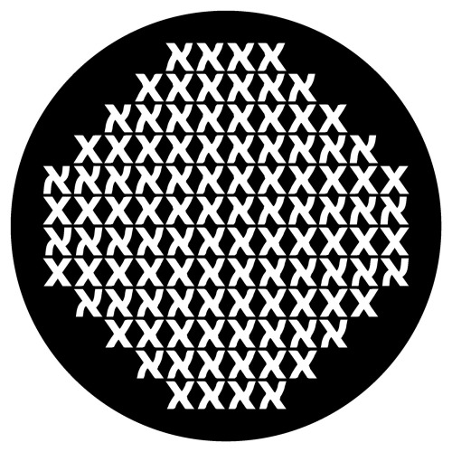
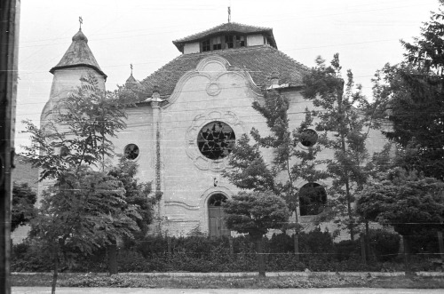
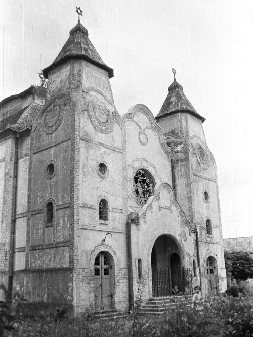
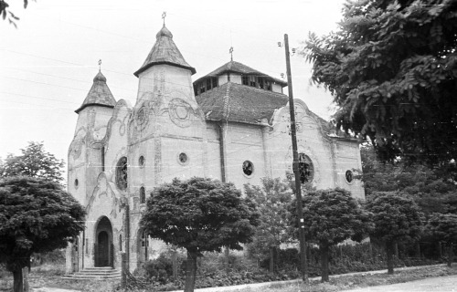
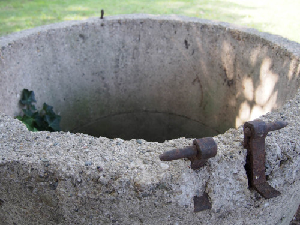
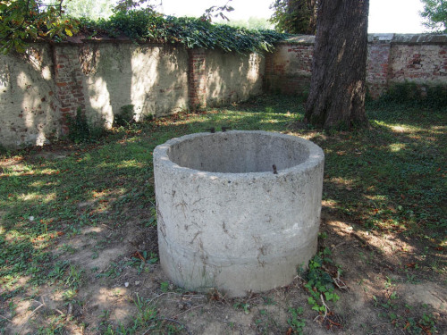
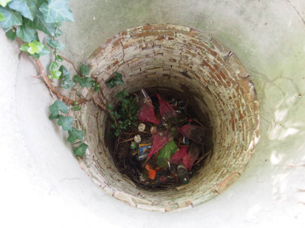
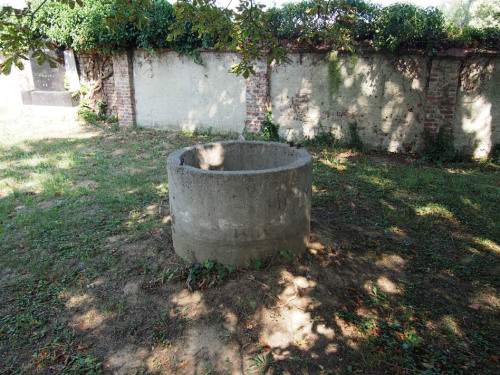
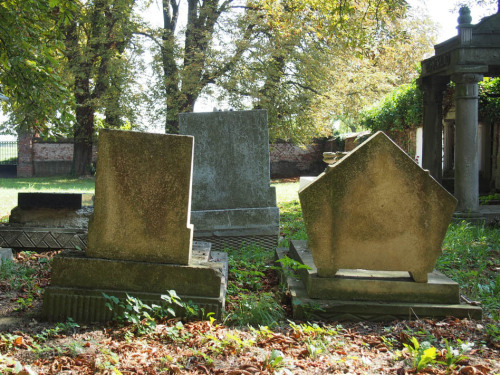
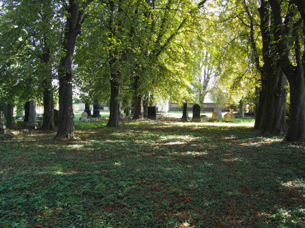
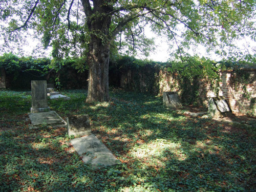
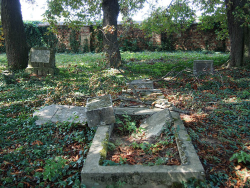
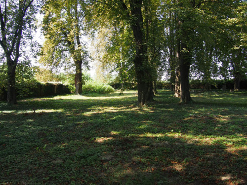
Az archív fotók forrása: FORTEPAN / LECHNER NONPROFIT KFT. DOKUMENTÁCIÓS KÖZPONT
papír, nyomat, 20×30 cm, 2015 / paper, print, 20×30 cm, 2015
1944 márciusában a Szabolcs utcai zsidó kórház épületeit és berendezéseit a megszálló hatóságok lefoglalták. Mivel az orvosoknak és a betegeknek távozniuk kellett, szükségkórházakat hoztak létre a Wesselényi utca 44-ben működő iskolában és a Bethlen tér 2. szám alatt, az Izraelita Siketnémák Országos Intézetének egykori épületében.
A Bethlen térre kihelyezett plakátokon a személyes és a történeti emlékek szövedékét akartam megmutatni. A letéphető, perforált lapokra egy-egy mondatot írtam. Ezek a mondatok hol a Bethlen térhez kötődő személyes emlékeimet, hol történeti tényeket közölnek. A személyes mondatok néhol szándékosan elszemélytelenítve, átfogalmazva jelennek meg a plakátokon.
/ All the buildings and the equipment belonging to the Jewish hospital in Szabolcs Street were seized by the occupying authorities. As doctors and patients had to leave, casualty clearing stations were set up in the school building on 44 Wesselényi Street and at 2 Bethlen Square, the former residence of the Israelite Institute for the Deaf and Dumb.
Through a loose stream of posters hung along Bethlen Square I wanted to create a visible web of personal and historical memories. On the tear-off tabs of the posters I left one long sentence each. These sentences either echo my personal memories or recall historical facts, both in connection with Bethlen Square. The personal quotations were deliberately generalised in several cases.